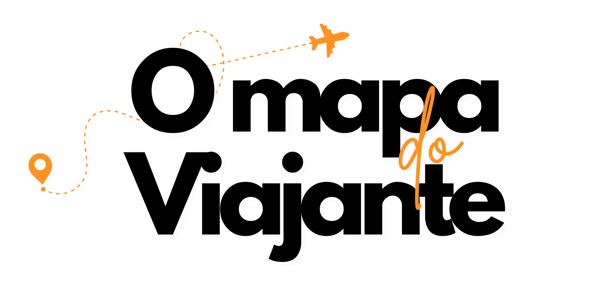

Manual de marca
Versão 2026 · revisão de 24/11Logo · Cores · Tipografia · AplicaçõesUso em qualquer criação
Versão 2026 · revisão de 24/11Logo · Cores · Tipografia · AplicaçõesUso em qualquer criação
Viajar mais, com mais conforto, sem gastar mais.
O Segredo do Viajante ensina brasileiros a usar milhas, cartões e planejamento para viajar mais. A marca fala como um amigo viajante que já fez o caminho: perto, prática e inspiradora, nunca elitista.
O logo une o título em negrito arredondado, o "do" manuscrito sempre em laranja e a rota pontilhada que sai do pin e chega ao avião: a viagem saindo do lugar. Use sempre os arquivos oficiais e nunca redesenhe o logo com uma fonte.
Ao redor do logo, deixe livre uma margem x igual à altura da letra "O". Nenhum texto, borda ou elemento entra nessa área.

O laranja é o pôr do sol no horizonte: a única cor de ação da marca. Ele vive sobre pretos quentes e brancos limpos. Os tons de apoio criam atmosfera, mas nunca disputam com o laranja.
Regra: todo laranja de texto, inclusive o "do" do logo, é o Laranja Âmbar #F58E26. Não use tons escurecidos de laranja para texto.
O laranja funciona porque é pouco. Se tudo for laranja, nada é destaque.
| Texto | Fundo | Contraste | Uso |
|---|---|---|---|
| Branco | Noite | 19,8:1 | Qualquer texto |
| Laranja | Noite | 8,3:1 | Qualquer texto |
| Quase preto | Laranja | 7,9:1 | Botões, faixas |
| Tinta | Branco | 18,5:1 | Qualquer texto |
| Laranja | Branco | 2,4:1 | Só títulos grandes e rótulos curtos em negrito; nunca texto corrido |
| Branco | Laranja | 2,4:1 | Evitar |
Duas fontes gratuitas (Google Fonts). A assinatura tipográfica é a palavra de destaque: uma palavra em laranja, na mesma fonte e no mesmo peso do título. Não usamos itálico, nem em título nem em texto.
Os elementos de apoio nascem do próprio logo e da ideia de viagem. Use um ou dois por peça; eles acompanham, não protagonizam.
Cantos arredondados: pílula para botões e etiquetas, 16–24px para cards e fotos. Nada de cantos vivos misturados com arredondados na mesma peça.
A foto é a prova da promessa. Priorize grupos da comunidade nos destinos, os fundadores viajando e o conforto conquistado (sala VIP, executiva). Luz natural e cores quentes.


Toda peça segue a linguagem das capas da área de membros, agora com regras fixas: o mesmo título, o mesmo destaque em laranja e o mesmo brilho. Assim, qualquer pessoa ou IA chega no mesmo resultado.

A foto de vocês entra recortada no arquivo final: aqui ela está suavizada nas bordas porque não temos o PNG sem fundo.

Regras das capas: título no topo, em League Spartan, branco com sombra em relevo; a palavra manuscrita laranja sobrepõe ou completa o título; as iniciais podem vir em laranja; o brilho laranja ocupa toda a base; o ícone do produto fica grande no canto inferior direito (ou o play no centro); fundo com foto temática ou mapa acobreado.

O que mudou em relação às capas atuais: título sempre em League Spartan (as capas misturavam 3 fontes); destaque sempre em laranja e sem itálico (a manuscrita fica só nas capas; antes era manuscrito variado); o brilho laranja vem sempre do mesmo canto; e as fotos azuis e frias ganham o véu e o brilho quentes da marca. O mapa-múndi em sépia das capas originais pode substituir o "mapa antigo" em código quando o arquivo da textura estiver disponível.